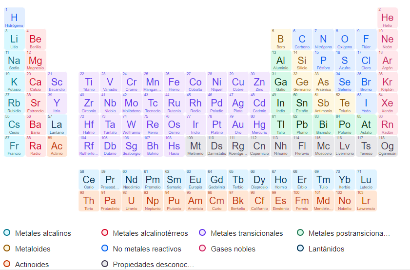
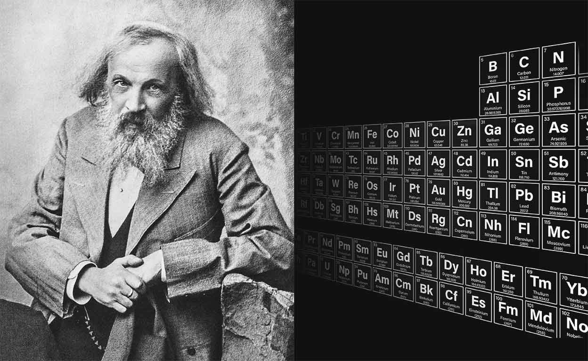

La tabla periodica

La tabla se lee de izquierda a derecha y de arriba hacia abajo, siguiendo el número atómico de los elementos. El número atómico representa la cantidad de protones presentes en el núcleo de un átomo de un elemento dado. Este número es único para cada elemento y aumenta secuencialmente a lo largo de la tabla. Esta organización secuencial facilita la identificación y el aprendizaje de las propiedades de los elementos, ya que permite predecir cómo se comportarán en reacciones químicas basándose en su posición en la tabla.
Además de organizarse por el número atómico, la posición de cada elemento en la tabla periódica refleja un incremento en su masa atómica, la cual se calcula sumando el número de protones y neutrones en el núcleo del átomo. Este detalle es crucial, ya que la masa atómica proporciona información sobre el peso relativo de cada elemento. A medida que avanzamos hacia la derecha o descendemos en la tabla, la masa atómica de los elementos tiende a aumentar, ofreciendo una pista sobre el peso de cada uno basándonos en su ubicación dentro de la tabla.
La disposición de los elementos en la tabla no es arbitraria. Cada posición refleja propiedades químicas y físicas específicas, lo que hace a la tabla periódica una herramienta poderosa para predecir el comportamiento de los elementos en diversas situaciones. Por ejemplo, los elementos que comparten la misma columna (grupo) tienen configuraciones electrónicas similares y, por tanto, propiedades químicas parecidas, lo que los hace reaccionar de manera similar con otros elementos.
La tabla periódica es mucho más que un simple listado de elementos; es una herramienta poderosa que nos permite prever el comportamiento químico y físico de los elementos gracias a su organización en grupos y periodos. Esta estructura no solo facilita el estudio de la química, sino que también revela las relaciones intrínsecas entre los diferentes elementos.
Grupos: familias de elementos con propiedades compartidas
Los grupos, o columnas verticales de la tabla periódica, agrupan a los elementos en familias que comparten características y propiedades químicas significativas. Estas similitudes se deben a que los elementos de un mismo grupo tienen el mismo número de electrones en su capa externa, lo que determina cómo interactúan con otros elementos. Por ejemplo, los elementos del grupo 1, conocidos como metales alcalinos, son altamente reactivos en presencia de agua, una propiedad común a todos los miembros de este grupo.
La organización en grupos permite a los químicos predecir la reactividad de un elemento, así como su posible compatibilidad o antagonismo con otros elementos. Esto es crucial para comprender y diseñar reacciones químicas, desde la síntesis de nuevos compuestos hasta la explicación de procesos naturales.
Periodos: la estructura de los electrones
En contraste, las filas horizontales de la tabla periódica, llamadas periodos, indican el número de orbitales atómicos en los que se organizan los electrones de un elemento. A medida que avanzamos de izquierda a derecha en un periodo, cada elemento tiene un electrón y un protón más que su predecesor, lo que afecta directamente a su estructura de electrones y, por ende, a sus propiedades químicas.
El número de periodos en la tabla refleja la cantidad de capas electrónicas que puede tener un átomo, comenzando con el periodo 1, que tiene una sola capa electrónica, hasta el periodo 7, donde los elementos tienen siete capas. Esta progresión nos da pistas sobre la complejidad de la estructura electrónica de los elementos y cómo esto influye en su comportamiento químico. Por ejemplo, los elementos en periodos superiores suelen tener propiedades más complejas debido a la mayor cantidad de interacciones electrónicas posibles.

Metales, metaloides y no metales
La tabla periódica no solo organiza los elementos según su número atómico y configuración electrónica, sino que también los agrupa por sus propiedades físicas y químicas distintivas. Una clasificación fundamental es la que divide a los elementos en metales, metaloides (o semimetales) y no metales, lo que nos brinda una guía rápida para entender sus características generales y comportamientos.
Metales: conductividad y brillo
Los metales, que ocupan la mayor parte de la tabla periódica y se encuentran principalmente en su lado izquierdo, son bien conocidos por su brillo característico, alta conductividad eléctrica y térmica, y maleabilidad. Esto significa que pueden ser deformados en láminas delgadas (maleabilidad) o estirados en alambres (ductilidad) sin romperse. Estas propiedades hacen a los metales materiales ideales para una amplia gama de aplicaciones industriales, desde la construcción de estructuras y fabricación de vehículos hasta la conducción de electricidad. Ejemplos comunes incluyen el hierro, el cobre, el aluminio y el oro.
No metales: diversidad en estados y propiedades
En contraste, los no metales se sitúan principalmente en el lado derecho de la tabla periódica. Estos elementos son notablemente diversos en sus formas y propiedades. Muchos no metales son gases a temperatura ambiente, como el oxígeno y el nitrógeno, mientras que otros son sólidos, como el carbono y el azufre. Los no metales se caracterizan por su baja conductividad térmica y eléctrica, una propiedad que los distingue claramente de los metales. Su variabilidad en estado físico y reactividad química los hace esenciales para numerosos procesos biológicos y industriales, incluyendo la formación de compuestos orgánicos y la fabricación de ácidos y bases.
Metaloides: una zona de transición
Entre los metales y no metales se encuentran los metaloides o semimetales, elementos que residen en la línea divisoria de la tabla periódica y exhiben una mezcla de propiedades de ambos grupos. Esta posición intermedia les otorga características únicas: por un lado, pueden mostrar cierto brillo metálico y conducir electricidad, aunque generalmente no tan bien como los metales; por otro, pueden ser quebradizos como los no metales en estado sólido. Los metaloides juegan roles cruciales en la tecnología, especialmente en la fabricación de semiconductores y dispositivos electrónicos, debido a su capacidad para controlar el flujo eléctrico. Ejemplos de metaloides incluyen el silicio, el germanio y el arsénico.
Símbolo químico
Descripción: es la abreviatura o representación corta del nombre del elemento, compuesta por una o dos letras. La primera letra siempre es mayúscula, mientras que la segunda, si la hay, es minúscula.
Importancia: facilita la identificación rápida del elemento en fórmulas químicas, ecuaciones y dentro de la tabla periódica.
Número atómico
Descripción: representa la cantidad de protones presentes en el núcleo de un átomo del elemento. Este número es único para cada elemento y se muestra como un número entero situado generalmente en la parte superior de la casilla.
Importancia: el número atómico define la identidad del elemento y su posición en la tabla periódica. Además, dado que los átomos son eléctricamente neutros en su estado fundamental, el número atómico también indica la cantidad de electrones en el átomo.
Masa atómica
Descripción: es el promedio ponderado de las masas de todos los isótopos naturales del elemento, teniendo en cuenta su abundancia en la naturaleza. Se muestra con decimales ya que es un promedio.
Importancia: proporciona información sobre el peso relativo de los átomos del elemento y es crucial para calcular la masa de moléculas y compuestos. La masa atómica nos da una idea aproximada del número total de protones y neutrones en el núcleo del átomo.
Nombre completo del elemento
Descripción: es el nombre oficial del elemento, que puede derivar de una característica del elemento, un lugar, un científico famoso, entre otros. En muchas tablas periódicas, este nombre aparece completo en la casilla correspondiente al elemento.
Importancia: conocer el nombre completo ayuda a comunicar y estudiar la química de manera más accesible, permitiendo asociar el símbolo químico con el elemento real.